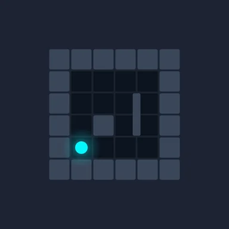

Puzzle
Gravity Maze
Rotate gravity, guide the ball, solve 90 mind-bending puzzle levels!
Final polish


About the game
Rotate the board, flip the direction of gravity, and guide the ball to the golden exit across 90 inventive levels. Easy to learn, addictive to master.
Every level is a compact maze to solve in as few moves as possible. Rotate the board 90°, let gravity do the rest, and find the most efficient path to earn all 3 stars.
Gravity Maze is fully playable offline, with no account or sign-up required. Optional ads let you earn free coins, and an ad-removal option is available for players who prefer an uninterrupted experience.
- 4 worlds, 4 challenges: the Ruins (the basics of gravity), the Sawmill (destructible wooden crates), the Rift (dimensional portals), the Core (forbidden zones).
- A 3-tier hint system (optimal move count, key elements, full visual walkthrough) helps you past any level that resists.
- Over 30 ball skins to collect, from common to legendary.
- 6 achievements to unlock, each rewarding a unique skin found nowhere else.
- A free daily mystery chest for a chance at coins or an exclusive skin.
- Available in English and French: the app automatically matches your phone's language.